水處理應用薄膜環境解決方案提供者
創新技術 · 誠信服務 · 永續發展
公司介紹
承信環境科技股份有限公司致力於提供全面的水處理環境工程解決方案，並代理水處理專業設備，為環境永續發展貢獻心力。我們秉持創新技術、誠信服務的理念，期許成為您最值得信賴的合作夥伴。
1. Thetis

Thetis技術起源於1989年, 有近30年的發展歷史。Thetis Environmental（希斯環境）作為全球膜分離技術引領者，一直致力於先進膜分離技術的開發和應用。作為Thetis（希斯）全球化戰略發展的一部分，Perma Filters自2024年開始在亞太地區開展業務。
2. Nature Works

Nature Works 是一家專注於高性能玻璃濾料的專業品牌，產品源自初代可回收平板玻璃，由西班牙研發團隊設計，專為水處理與過濾應用打造。其產品已通過多項國際認證，包括美國 NSF、法國 Bureau Veritas、瑞士 Bioexam 等，廣泛應用於泳池、工業、民生與高端水處理系統。
3. Fluence
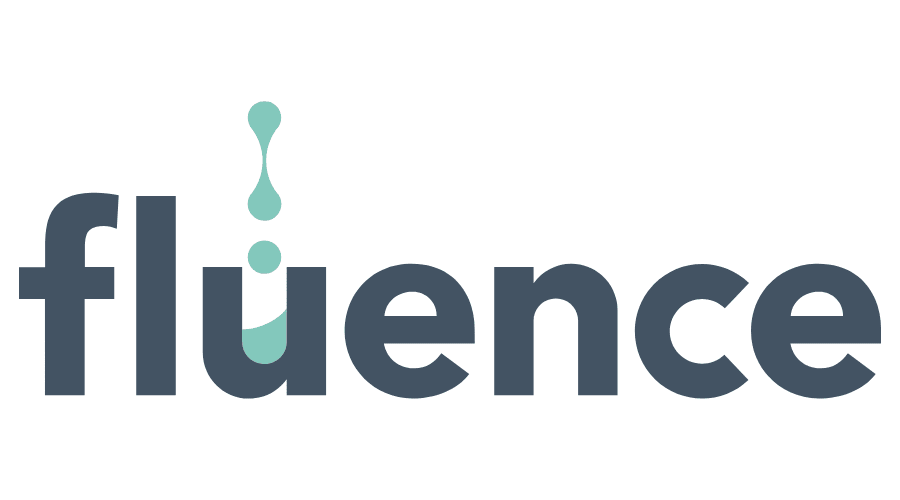
Fluence 是全球分散式水處理和廢水回用技術的領導者，專精於節能減碳技術，其核心的 MABR（薄膜通氣生物膜反應器）技術能降低約40%的污水處理耗能。
4. FEDCO
FEDCO 於 1997 年成立於美國密西根州 Monroe，專注於 RO 高壓與低壓泵浦、能源回收裝置及反滲透系統設計。透過水力設計、製造與性能測試，提供從單機設備到 BiTurbo 多段 RO 的整合方案。
國際獎項與入選紀錄
- 2020｜Distinction：Rancho San Lucas，Global Water Awards。
- 2023｜共同第一名：創辦人 Eli Oklejas，Miriam Balaban Innovation Award。
- 2024｜年度海水淡化廠入圍：Cabo San Lucas，Global Water Awards。
- 2026｜Semifinalist：XPRIZE Water Scarcity，Track A。
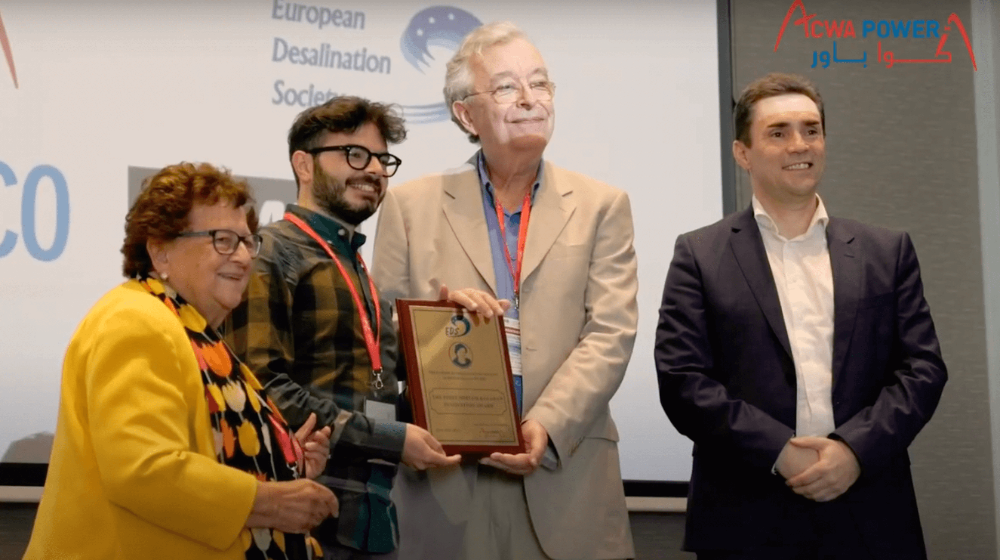
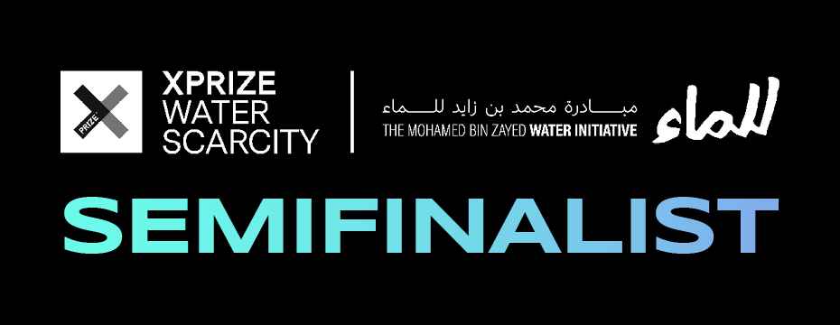
5. Memstar

Memstar 是一家全球領先的薄膜技術公司，專注於高性能 PVDF 中空纖維超濾膜，廣泛應用於工業和市政水處理。 該公司在全球擁有超過220 個成功案例，每日處理水量超過1,000 萬立方米，並擁有150 多項專利。 Memstar 的總部位於新加坡，並在中國設有生產基地
產品介紹

超濾膜（UF）外壓式
超濾膜技術應用開發
研究超濾膜在工業與生活污水處理中之截留效率與模組化設計，提升出水品質與運行穩定性。
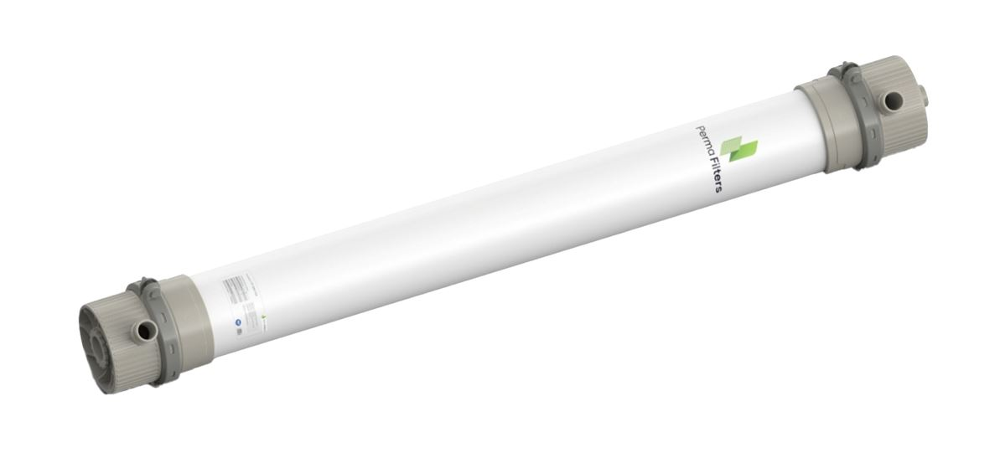
超濾膜（UF）內壓式
超濾膜技術應用開發
研究具特殊性之汙水透過超濾膜的過濾效率與模組化設計，提升出水品質與運行穩定性。
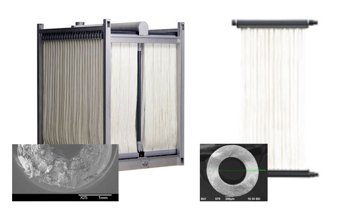
膜生物反應器（MBR）
內襯及無內襯100%PVDF不同之應用
針對市政與工業污水處理中的MBR運作參數與膜污染控制策略進行整合研究，必須搭配不同膜絲的產品及操作、維保。
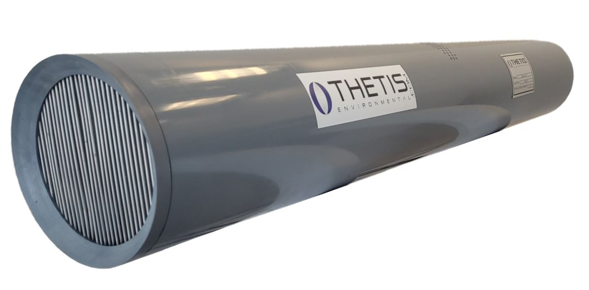
超高濃度固液分離過濾器
利用獨家技術設計超高濃度廢水(可含油)過濾器。
使用獨創設備進行過濾，可免除前處理直接過濾後達到RO超濾膜UF的效果。

膜絲特殊性選擇應用
利用先進的材料及製程技術，製造不同的膜絲，以用於不同領域。
具有100%PVDF薄膜、多材質複合性薄膜，並依水質選用不同孔徑過濾材料。

高性能玻璃砂
無色透明，純淨度高、無游離矽、無尖角
可完全替代石英砂、活性碳等傳統濾材，實驗室認證及NSF認證。
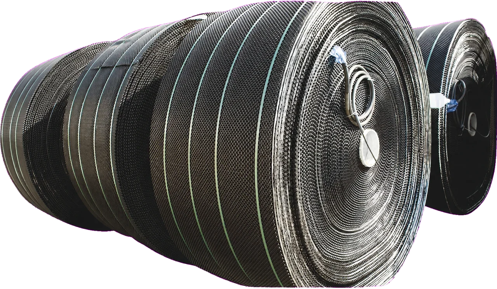
MABR 膜曝氣生物膜反應器
高效節能的分散式污水處理技術
採用中空纖維膜進行無泡曝氣，使硝化與反硝化同步進行，可大幅降低曝氣能耗，並提升氮、BOD及COD去除效率，適合分散式污水處理及既有污水廠升級改造。
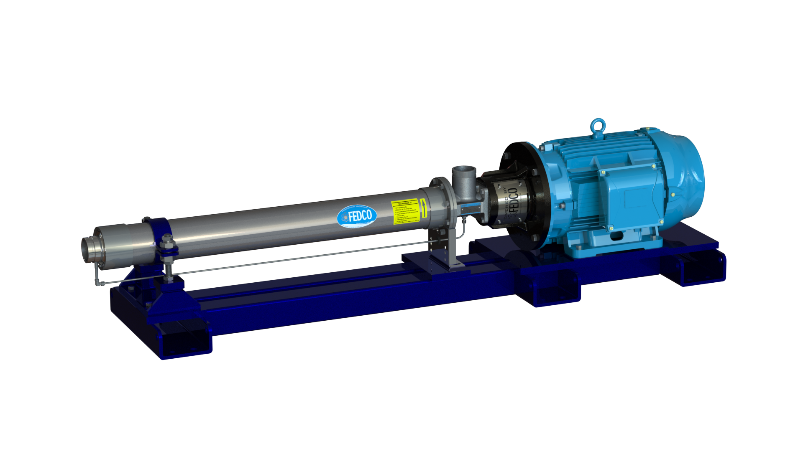
FEDCO MSS 高壓泵浦
苦鹹水與海水 RO 供水應用
以多級離心泵提供 RO 所需壓力，結合 Water Bearing 水潤滑軸承與低壓側軸封，並可搭配能源回收裝置。
查看產品與型錄 →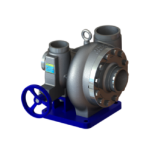
FEDCO HPB 能源回收裝置
濃水驅動的渦輪增壓技術
利用高壓濃水驅動渦輪，透過共同轉子帶動泵端增壓；進水與濃水分開流動，回收水力能量供進水或段間增壓使用。
查看產品與型錄 →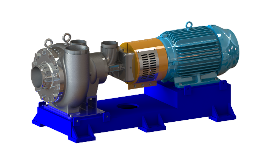
FEDCO HP-HEMI 能源回收裝置
馬達輔助與變頻調節
結合濃水能源回收與馬達輔助，透過變頻器調整設備運轉，對應大型海水 RO 系統的進水、濃水流量及壓力控制需求。
查看產品與型錄 →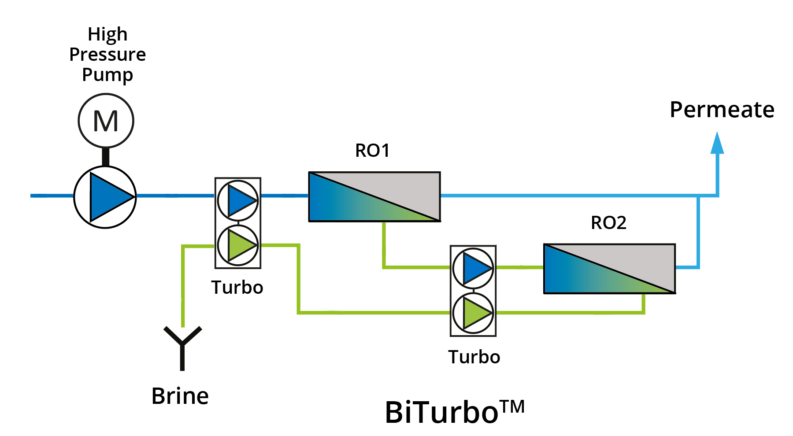
FEDCO BiTurbo 多段 RO
兩段膜與兩台 Turbo 整合設計
以兩台 Turbo 配合兩段 RO 膜，分工處理進水及段間增壓。依各段流量、鹽度與壓力需求，規劃高回收率反滲透系統。
查看產品與型錄 →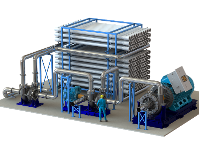
FEDCO POWERLINE 海水淡化
大型 SWRO 系統設計
結合多段反滲透、能源回收設備與大型系統配置，依產水規模及現場條件規劃海水淡化方案，整合膜段與泵浦操作需求。
查看產品與型錄 →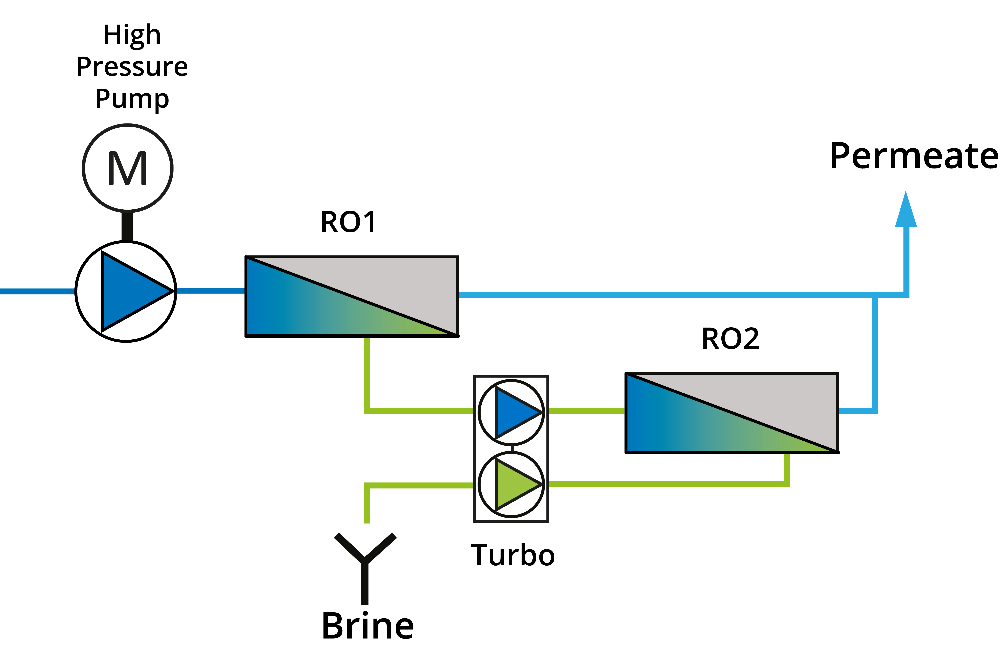
FEDCO 苦鹹水與廢水 RO
段間增壓與水回用方案
針對苦鹹水及廢水回用，運用段間增壓與能量回收匹配膜段壓力，依進水水質及產水需求評估回收率與系統運轉。
查看產品與型錄 →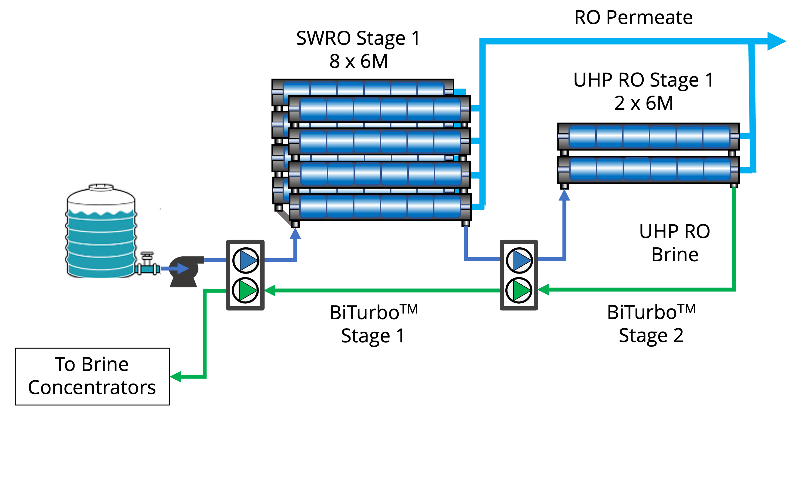
FEDCO 濃鹽水濃縮與 ZLD
高壓 RO 與後段處理整合
透過多段及超高壓 RO 提高濃鹽水的水回收，配合結垢控制與後段濃縮、結晶或資源回收流程，規劃零液體排放的整合路徑。
查看產品與型錄 →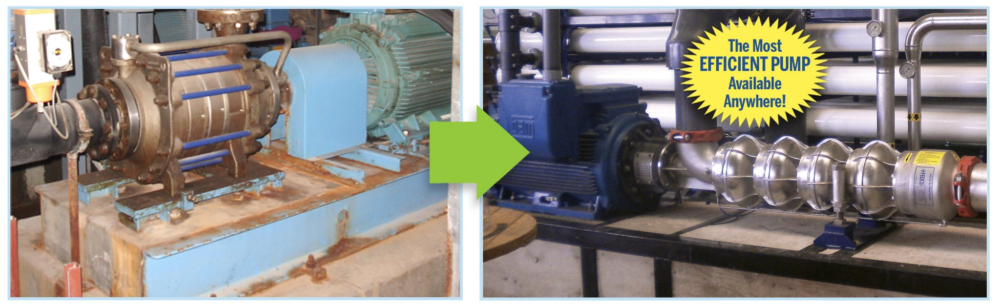
FEDCO RO 升級改造
既有設備與能源回收優化
評估既有 RO 的水質、產能、泵浦及膜段配置，透過設備更換、增設能源回收或多段流程改造，規劃符合現場條件的升級方案。
查看產品與型錄 →技術資料
親水性
決定膜材料對水中有機污染物的吸附程度，進而影響膜的通量。親水性好的膜材料不易吸附有機污染物，能夠保持較高的膜通量，提高過濾效率。
膜孔徑
孔徑是其最核心的特徵之一，直接決定了膜的分離性能和應用領域。通常指膜表面或膜孔道中的物理孔洞或通道的開孔大小。超濾膜孔徑通常以尺寸（微米）或截留分子量（道爾頓）來表征。
全量過濾（死端過濾）
全部進料液在壓力作用下透過超濾膜，形成透過液，無連續濃縮液排放。適用於原水水質較好、污染物含量低的情況，操作簡單、能耗較低。
錯流過濾
一部分進料液在壓力作用下透過超濾膜，一部分進料液沿膜表面流動並攜帶被截留的雜質流出膜組件，有效減少膜污染，提高過濾效率。
正沖洗
利用高速水流在切向於膜表面方向沖刷掉膜表面鬆散的、未能完全形成的污染物層或懸浮物，防止其壓實和累計。
反沖洗
與過濾運行方向相反的方向施加水流，利用水流的反向壓力，將附著在膜表面的污染物剝離、沖走。
加藥反洗
將化學藥劑添加到反洗水中，化學品的溶解、分解作用有利於去除單純的物理反洗難以有效清除的有機污染物、微生物和膠體等物質。是介於純物理反洗和完整化學清洗之間的維護性化學清洗。
化學清洗
當超濾系統的跨膜壓差(ΔP)顯著升高或產水量明顯下降，且通過常規的正沖洗、反沖洗、加藥反洗無法有效恢復性能時所進行的深入、徹底的恢復性化學清洗。通常在離線或系統隔離清洗（即不參與生產）的狀態下進行，使用較高濃度的化學藥劑在膜系統內循環。
高性能玻璃濾料
產品源自初代可回收平板玻璃，由西班牙研發團隊設計，專為水處理與過濾應用打造，可選擇不同粒徑達到不同的過濾效果。
高效節能的分散式污水處理技術
Fluence（富朗世）的 MABR 技術是一項經廣泛驗證的市政污水處理專利技術，採用螺旋纏繞式自供氧生物膜。半透膜浸沒於污水池中，低壓空氣由膜的氣相側送入，使膜表面形成好氧生物膜，並在缺氧液體中同步進行反硝化反應。相較於傳統高壓曝氣，可大幅降低曝氣能耗並提高氧氣傳質效率，帶來更高效的污染物去除能力、更低的營運成本及更小的占地需求。
Water Bearing 水潤滑軸承
以輸送液潤滑與冷卻軸承，並承受泵浦軸向推力，應用於 MSD／MSS 高壓泵浦。軸承無需補充潤滑油脂；整台設備仍須依原廠手冊檢查及維護。
濃水水力能源回收
高壓濃水在渦輪端釋放能量，經共同轉子帶動離心泵端增壓。進水與濃水分開流動，將回收的水力能用於 RO 進水或段間增壓。
多段 RO 與段間增壓
鹽度隨濃縮增加，各段膜的淨驅動壓力與流量需求也不同。透過膜段配置與段間增壓共同設計，評估通量平衡、產水品質及回收率，並依水質核定操作條件。
濃鹽水濃縮與後段資源化
高壓 RO 可作為濃鹽水減量與提高水回收率的一環。完整 ZLD 仍須依水質、結垢風險與排放目標，整合後段濃縮、結晶及固體處理，不能以 RO 單機取代完整流程。